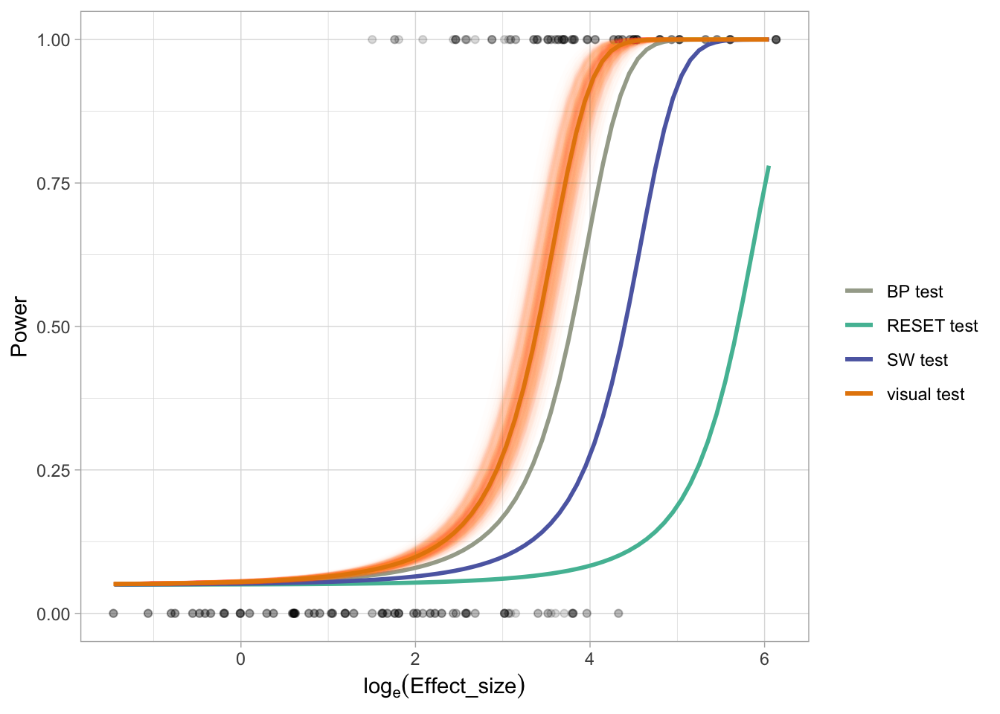

1 Use the entire dataset to perform power analysis
The idea is to use conventional tests to decide if the model is correctly specified in regards of the type of the departures. This may lead to Type III error though.
1.2 Load data
1.2.1 Visual test data
visual_test_dat <- vi_survey %>%
filter(x_dist == "uniform", !attention_check, !null_lineup) %>%
select(unique_lineup_id, effect_size, type, p_value) %>%
group_by(unique_lineup_id) %>%
summarise(across(everything(), first))
head(visual_test_dat)
#> # A tibble: 6 × 4
#> unique_lineup_id effect_size type p_value
#> <chr> <dbl> <chr> <dbl>
#> 1 heter_101 272. heteroskedasticity 0.000269
#> 2 heter_105 1.84 heteroskedasticity 0.824
#> 3 heter_110 20.6 heteroskedasticity 0.924
#> 4 heter_116 40.8 heteroskedasticity 0.0438
#> 5 heter_120 7.97 heteroskedasticity 0.0147
#> 6 heter_121 44.3 heteroskedasticity 0.06051.2.2 Conventional test data
poly_conv_sim <- readRDS("data/poly_conventional_simulation.rds")
heter_conv_sim <- readRDS("data/heter_conventional_simulation.rds")
# Borrow effect size from the survey
poly_conv_sim <- poly_conv_sim %>%
left_join(select(filter(vi_survey, type == "polynomial"),
shape, e_sigma, n, x_dist, effect_size))
heter_conv_sim <- heter_conv_sim %>%
left_join(select(filter(vi_survey, type == "heteroskedasticity"),
a, b, n, x_dist, effect_size))
conv_test_dat <- bind_rows(poly_conv_sim, heter_conv_sim) %>%
filter(x_dist == "uniform")
head(conv_test_dat)
#> # A tibble: 6 × 19
#> shape e_sigma x_dist n F_p_v…¹ RESET…² RESET…³ RESET…⁴
#> <dbl> <dbl> <chr> <dbl> <dbl> <dbl> <dbl> <dbl>
#> 1 3 1 unifo… 50 5.24e-5 0.152 9.15e-4 8.29e-4
#> 2 3 1 unifo… 50 5.24e-5 0.152 9.15e-4 8.29e-4
#> 3 3 1 unifo… 50 5.24e-5 0.152 9.15e-4 8.29e-4
#> 4 3 1 unifo… 50 5.24e-5 0.152 9.15e-4 8.29e-4
#> 5 3 1 unifo… 50 5.24e-5 0.152 9.15e-4 8.29e-4
#> 6 3 1 unifo… 50 5.24e-5 0.152 9.15e-4 8.29e-4
#> # … with 11 more variables: RESET6_p_value <dbl>,
#> # RESET7_p_value <dbl>, RESET8_p_value <dbl>,
#> # RESET9_p_value <dbl>, RESET10_p_value <dbl>,
#> # BP_p_value <dbl>, SW_p_value <dbl>, boot_id <int>,
#> # effect_size <dbl>, a <dbl>, b <dbl>, and abbreviated
#> # variable names ¹F_p_value, ²RESET3_p_value,
#> # ³RESET4_p_value, ⁴RESET5_p_value1.3 Compute GLM for visual test
1.3.1 Define the minimum and maximum effect size
1.3.2 Fit the model
visual_mod <- visual_test_dat %>%
mutate(offset0 = log(0.05/0.95)) %>%
mutate(reject = p_value <= 0.05) %>%
# Slope-only model
glm(reject ~ effect_size - 1,
family = binomial(),
data = .,
offset = offset0)
summary(visual_mod)
#>
#> Call:
#> glm(formula = reject ~ effect_size - 1, family = binomial(),
#> data = ., offset = offset0)
#>
#> Deviance Residuals:
#> Min 1Q Median 3Q Max
#> -3.0104 -0.4070 -0.3307 0.1368 2.2719
#>
#> Coefficients:
#> Estimate Std. Error z value Pr(>|z|)
#> effect_size 0.098306 0.007402 13.28 <2e-16 ***
#> ---
#> Signif. codes:
#> 0 '***' 0.001 '**' 0.01 '*' 0.05 '.' 0.1 ' ' 1
#>
#> (Dispersion parameter for binomial family taken to be 1)
#>
#> Null deviance: 741.18 on 279 degrees of freedom
#> Residual deviance: 195.65 on 278 degrees of freedom
#> AIC: 197.65
#>
#> Number of Fisher Scoring iterations: 71.3.3 Make prediction for the visual model
visual_pred <- data.frame(effect_size = exp(seq(log(min_es),
log(max_es),
0.1))) %>%
mutate(power = predict(visual_mod,
type = "response",
newdata = data.frame(effect_size = effect_size,
offset0 = log(0.05/0.95)))) %>%
mutate(log_effect_size = log(effect_size))
head(visual_pred)
#> effect_size power log_effect_size
#> 1 0.2343650 0.05110579 -1.4508755
#> 2 0.2590134 0.05122343 -1.3508755
#> 3 0.2862541 0.05135373 -1.2508755
#> 4 0.3163597 0.05149810 -1.1508755
#> 5 0.3496315 0.05165810 -1.0508755
#> 6 0.3864026 0.05183548 -0.95087551.3.4 Make bootstrap prediction for the visual model
visual_boot_pred <- map_dfr(1:500, function(boot_id) {
boot_mod <- visual_test_dat %>%
mutate(offset0 = log(0.05/0.95)) %>%
mutate(reject = p_value <= 0.05) %>%
slice_sample(n = nrow(.), replace = TRUE) %>%
update(visual_mod, data = .)
data.frame(effect_size = exp(seq(log(min_es),
log(max_es),
0.1))) %>%
mutate(power = predict(boot_mod,
type = "response",
newdata = data.frame(effect_size = effect_size,
offset0 = log(0.05/0.95)))) %>%
mutate(log_effect_size = log(effect_size)) %>%
mutate(boot_id = boot_id)
})1.4 Compute GLM for conventional tests
conv_pred <- conv_test_dat %>%
select(-RESET3_p_value, -(RESET5_p_value:RESET10_p_value), -F_p_value) %>%
rename(RESET_p_value = RESET4_p_value) %>%
pivot_longer(RESET_p_value:SW_p_value) %>%
mutate(name = gsub("_p_value", " test", name)) %>%
mutate(reject = value <= 0.05) %>%
select(effect_size, name, reject) %>%
mutate(offset0 = log(0.05/0.95)) %>%
nest(dat = c(effect_size, offset0, reject)) %>%
mutate(mod = map(dat,
~glm(reject ~ effect_size - 1,
family = binomial(),
data = .x,
offset = offset0))) %>%
mutate(power = map(mod, function(mod) {
data.frame(effect_size = exp(seq(log(min_es),
log(max_es),
0.1)),
offset0 = log(0.05/0.95)) %>%
mutate(power = predict(mod, type = "response", newdata = .))
})) %>%
select(-dat, -mod) %>%
unnest(power) %>%
select(-offset0) %>%
mutate(log_effect_size = log(effect_size))1.5 Draw the plot
ggplot() +
geom_point(data = visual_test_dat,
aes(log(effect_size), as.numeric(p_value <= 0.05)),
alpha = 0.15) +
geom_line(data = conv_pred,
aes(log_effect_size, power, col = name),
size = 1) +
geom_line(data = visual_boot_pred,
aes(log_effect_size, power, col = "visual test", group = boot_id),
size = 1,
alpha = 0.01) +
geom_line(data = visual_pred,
aes(log_effect_size, power, col = "visual test"),
size = 1) +
theme_light() +
scale_color_manual(values = rev(rcartocolor::carto_pal(4, "Vivid"))) +
xlab(expression(log[e] (Effect_size))) +
ylab("Power") +
labs(col = "", size = "# lineups")